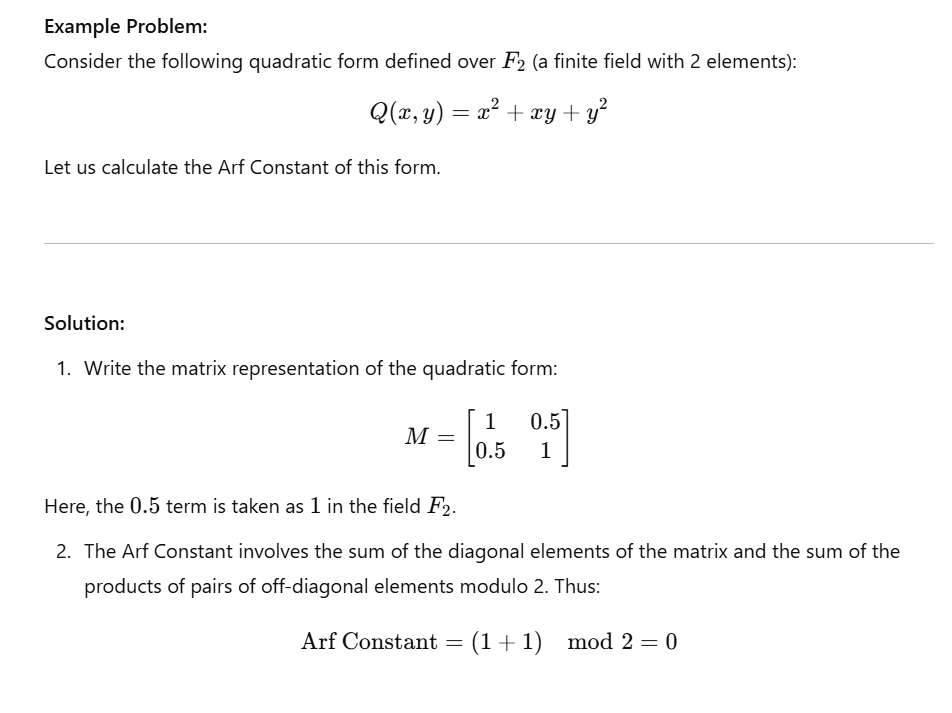

The Arf Constant is a mathematical term defined by Cahit Arf, used in the classification of quadratic forms. Quadratic forms involve the analysis of second-degree expressions dependent on multiple variables.
The Arf Constant serves as a tool for isometric classification of quadratic forms and plays a fundamental role in reducing these forms. It is used to determine the class of a quadratic form on a modular surface. Particularly, it is employed in studying quadratic forms defined over finite fields, characterizing the geometric or algebraic properties of these forms.
The image below provides an example calculation of the Arf Constant:
The Republic of Turkey honors scientists and artists by featuring them in banknote designs, showcasing its commitment to science and culture. Cahit Arf's portrait is featured on the back of the 10 TL banknote to celebrate his contributions to science and inspire future generations. His legacy lives on, as many students studying mathematics, engineering, and physics encounter his name in their education.
| "Do not memorize mathematics, understand and do it yourself." - Cahit Arf |